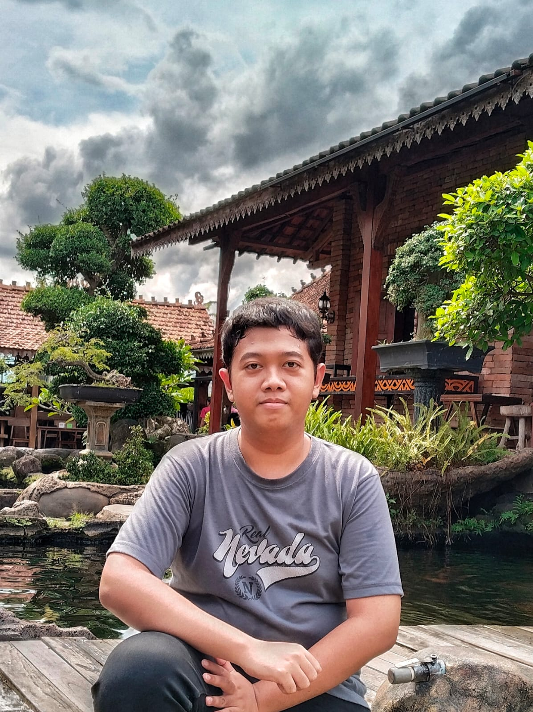

Mahasiswa Teknik Informatika
Raditya Sinatrya Putra
Mahasiswa S1 Teknik Informatika di Universitas Paramadina dengan minat pada pengembangan web, keamanan siber, dan Internet of Things (IoT).
Kontak SayaTentang Saya
Halo! Saya Raditya Sinatrya Putra, biasa dipanggil Radit. Saat ini saya sedang menempuh pendidikan S1 Teknik Informatika di Universitas Paramadina. Saya memiliki ketertarikan dalam dunia pengembangan web, keamanan siber, dan Internet of Things (IoT).
Saya fokus mendalami teknologi web seperti HTML, CSS, JavaScript, pengolahan basis data menggunakan MongoDB dan Express/Node.js, serta dasar-dasar keamanan sistem.
Daftar Keahlian
- Backend & Database: Node.js, MongoDB, FastAPI
- Bahasa Pemrograman: C++, Python, HTML(basic), CSS(basic), JavaScript(basic)
- Tools: Git, GitHub, VS Code
Pendidikan
| Jenjang | Instansi | Jurusan | Tahun |
|---|---|---|---|
| SMA / MA | SMAN 113 Jakarta | IPA | 2022 - 2025 |
| Perguruan Tinggi | Universitas Paramadina | Teknik Informatika | 2025 - Sekarang |